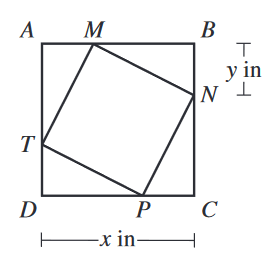

In the figure shown below, square \(MNPT\) is inscribed in square \(ABCD\). The length of \(\overline{DC}\) is \(x\) inches, and the length of \(\overline{BN}\) is \(y\) inches. In terms of \(x\) and \(y\), which of the following expressions gives the area, in square inches, of \(MNPT\) ?

The sides of the smaller square are the hypotenuse of the triangles. The triangles have sides \(x-y\) and \(y\). Using the pythaogrean theorem:
$$ a^2+b^2=c^2 $$
$$ (x-y)^2+y^2 = c ^2 $$
$$ =x^2-2xy+y^2+y^2 = c^2 $$
$$ c^2=\boxed{x^2-2xy+2y^2} $$
Since the area of a square is the side squared, \(c^2\) equals the area of the smaller square.